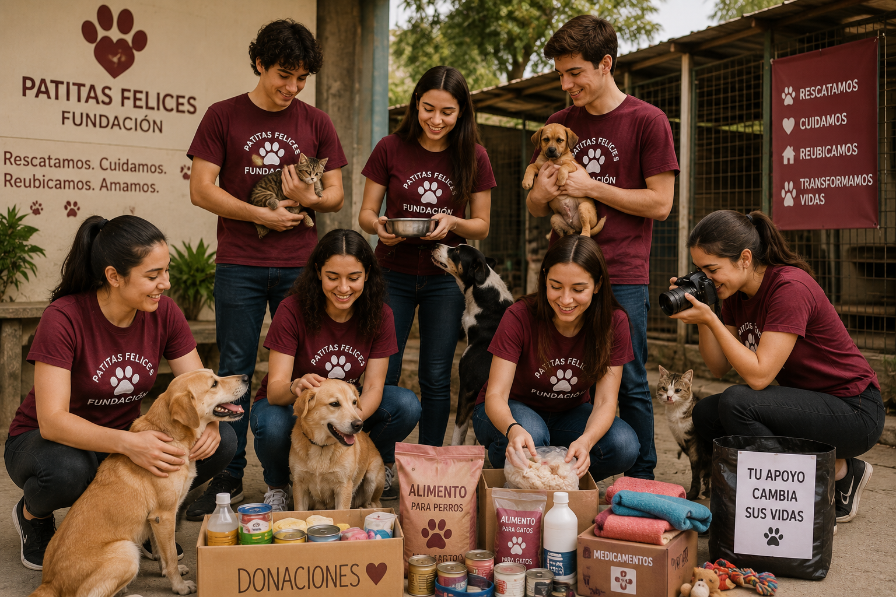
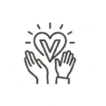

¿Perdiste o encontraste una mascota? Llama al (702) 555-GUAU para recibir ayuda
Ser voluntario en Fundación Patitas Felices es mucho más que participar en actividades comunitarias; es convertirse en una luz para animales que han conocido el abandono, el miedo y la indiferencia. Cada jornada, cada paseo, cada plato de comida servido y cada gesto de cariño puede transformar la vida de un perro o un gato rescatado. Además de adquirir experiencia en trabajo colaborativo y bienestar animal, tendrás la oportunidad de formar parte de campañas, eventos y proyectos que generan un impacto real en la comunidad.


Si deseas formar parte de nuestro equipo de voluntariado, completa el formulario de inscripción con tus datos y disponibilidad. Nuestro equipo se pondrá en contacto contigo para brindarte más información sobre las próximas actividades y jornadas disponibles.